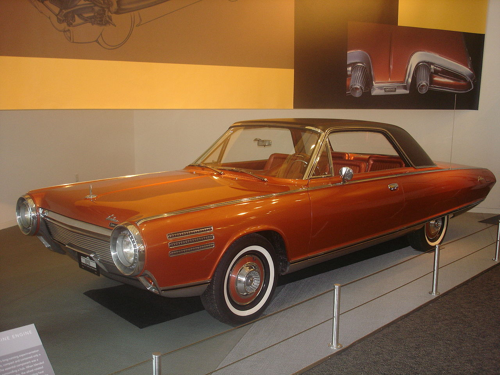
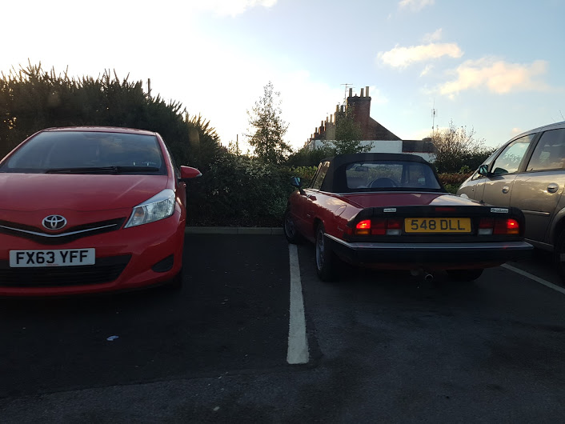

Over the years cars have gone over multiple changes in terms of engines and physical design. The following cars are some oddities that have been produced.

1957 Aurora Safety Car
This very odd looking vehicle was created by Father Alfred A. Juliano, a Catholic priest in 1957. Only one prototype was ever created, after that the Aurora Motor Company went bust. It is often cited as the ugliest car ever produced, due to its safety conscious design. The car had multiple features not common for cars of the era, including seatbelts, a roll cage, and a side impact bar. The car had mechanical problems on the day that it was unveiled to the public as the engine has not been started in the 4 years that the car was in development, leading to much critique and ultimately failure. Father Juliano died of a brain haemorrhage in 1989.

1963 Chrysler Turbine Car
The first and only consumer car to be propelled by a gas turbine. There were multiple challenges during the development of the engine, fuel consumption, acceleration lag, and noise had to all compete with conventional engines of the time. The engine turbine engines had multiple benefits over conventional piston engines including no warm up period, much lower number of parts, longer life expectancy, the ability to run on just about any fuel including petrol, diesel, kerosene, vegetable oil, and anything in-between without adjustments, as well as requiring less maintenance.

1978 SAAB 99 Turbo
Turbocharging for the masses. The SAAB 99 Turbo was not the first commercially available turbocharged car, as that would be the 1962 Oldsmobile Jetfire, but it was the first to be a huge success, as it offered the performance of larger displacement cars with better fuel economy.
1981 Triumph Acclaim
The final car from the Triumph brand. Based on the Honda Ballade, the car was the first Japanese-designed car to be built within the European Economic Community. It was well built and reliable, unlike many of the other cars built by British Leyland at the time, and holds the record for the lowest amount of warranty claims for any BL made car.

1991 Mazda MX3
Though it may look like any ordinary Japanese hatchback from the 90s, the Mazda MX3 has an interesting heart. It was available with a 4 cylinder 1.6 litre engine, or a 1.8 litre V6. This is one of the smallest production V6 engines ever, and has a fuel cut off of 7800 RPM..
Use the slideshow below to view cars that I have seen in real life and found interesting!
1 / 5

Peugeot 205 GT
3 / 5
Honda Integra Type R
5 / 5

Alfa Romeo Spider
❮
❯
I have created this website as there are not many sites where you can find a collection of strange cars from the past. This site can always be updated in the future to include any newfound odd cars.